01 / Crescent map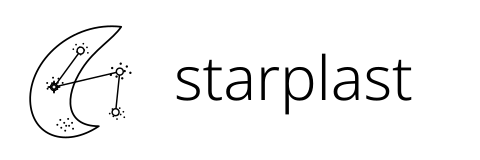A parasite crescent opens onto a connected point cloud.Black SVGWhite SVGIcon
02 / Apical atlas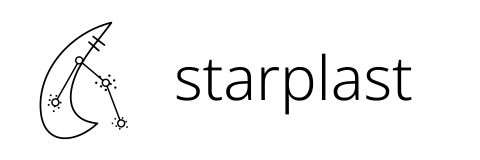The pointed apex anchors a network across three clusters.Black SVGWhite SVGIcon
03 / Cell to constellation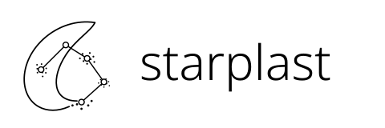A curved cell boundary dissolves into mapped genes.Black SVGWhite SVGIcon
04 / Point-cloud parasite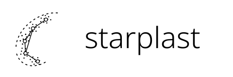Clustered genes trace the crescent; links reveal its network.Black SVGWhite SVGIcon
05 / Cluster bridge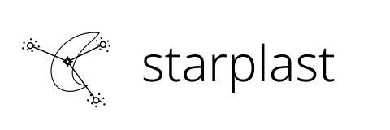A parasite connects distinct islands in the gene map.Black SVGWhite SVGIcon
06 / Orbital map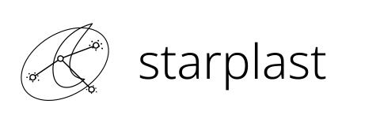An apicomplexan sits inside a sparse star-map orbit.Black SVGWhite SVGIcon
07 / Inner atlas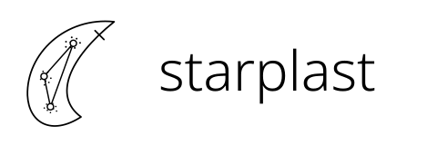A broad parasite outline contains a small UMAP network.Black SVGWhite SVGIcon
08 / Apical fan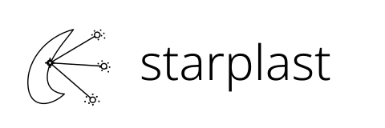Connections fan from the parasite into separate gene clusters.Black SVGWhite SVGIcon
09 / Membrane network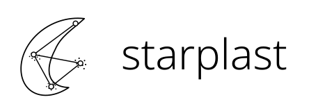The parasite contour becomes the backbone of a star map.Black SVGWhite SVGIcon
10 / Starplast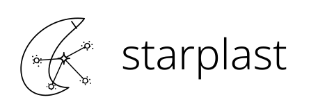One selected gene ties the crescent to its clustered neighbours.Black SVGWhite SVGIcon